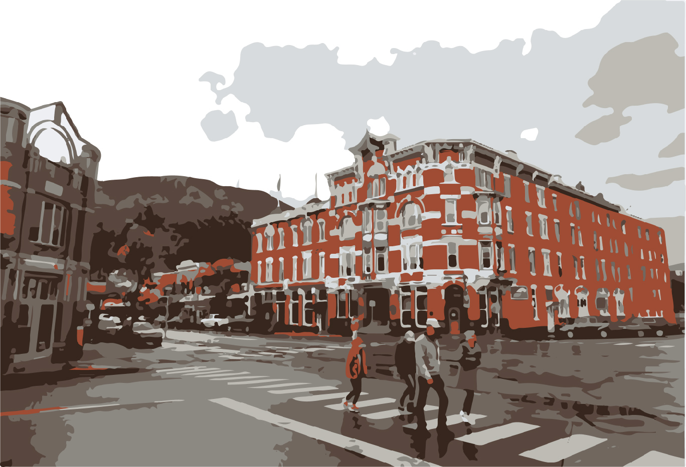
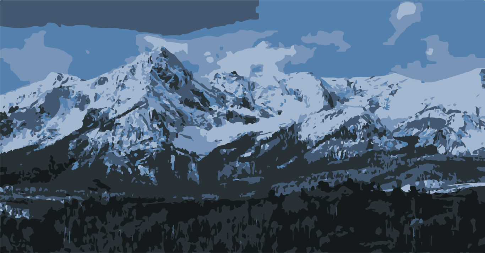
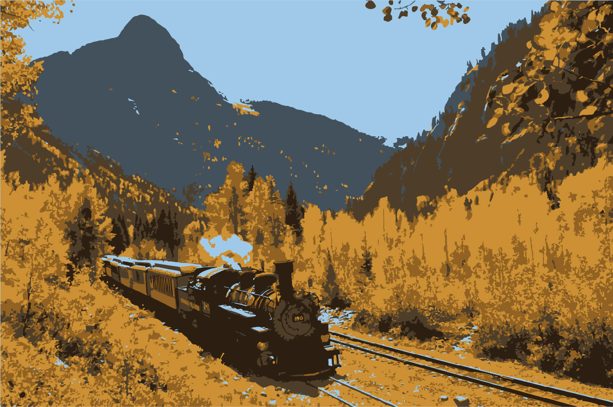
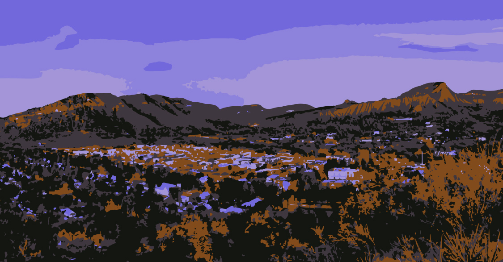
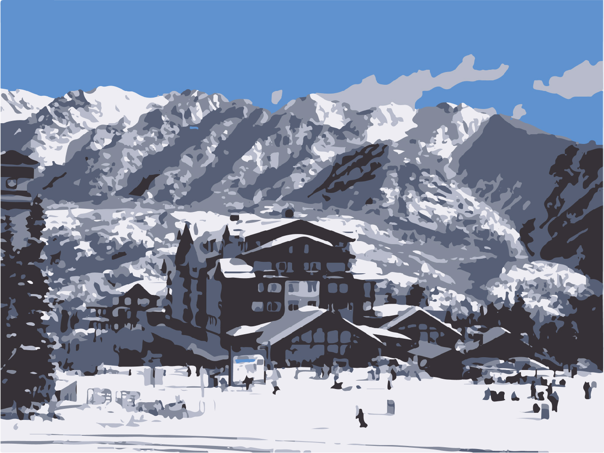
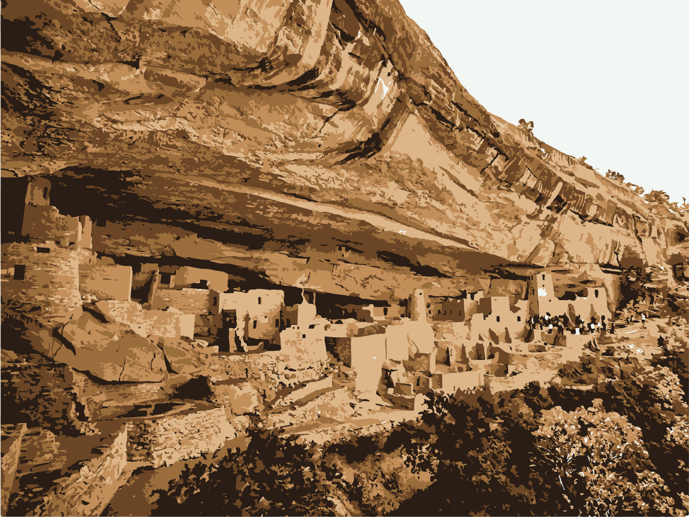

- Intro
- The City of Durango is the home rule municipality that is the county seat and the most populous municipality of La Plata County, Colorado, United States. The city population was 19,071 at the 2020 United States Census. Durango is the home of Fort Lewis College.
- History
- The town was organized from September 1880 to April 1881 by the Denver and Rio Grande Railroad (D&RG, later known as the Denver and Rio Grande Western railroad) as part of their efforts to reach Silverton, Colorado, and service the San Juan mining district, the goal of their "San Juan Extension" built from Alamosa Colorado. The D&RG chose a site in the Animas Valley close to the Animas River near what's now the Downtown Durango Historic Business District for its railroad facilities following a brief and most likely perfunctory negotiation with the other establishment in the area known as Animas City, two miles to the north. The city was named by ex-Colorado Governor Alexander C. Hunt, a friend of D&RG President William Jackson Palmer, after Durango, Mexico, based on his favorable impression of that city resulting from a scouting trip undertaken on behalf of Palmer.
- 
- Climate
-

According to the Köppen climate classification system, Durango has a mediterranean continental climate. The average annual precipitation is 19.33 in (491 mm). Its hardiness zone is 5b.
Summer recreation: With mountains to climb, rivers to raft, trails to hike, horses to ride, and so much more, a whole summer is barely enough time to get in all of the outdoor recreation Durango has to offer. Our temperate climate and unique landscape means you'll have plenty of warm (not too hot!), sunny days to explore our surrounding San Juan Mountains, spend a day on the lake, zipline, or any other number of outdoor adventures. Get ready to get outside in Durango!
Winter recreation: When the snow flies, Durango comes alive! With bluebird skies and things to do for the whole family, find your escape in Durango this winter. Winter activities include everything from skiing and snowboarding to dogsledding.
- Culture
-
Main Avenue is a Nationally Registered Historic District that cuts through downtown Durango and is home to galleries, boutiques, restaurants, bars, and other businesses. Two notable and historic hotels, The General Palmer and The Strater, lie at the south end of the avenue, near the Durango & Silverton Narrow Gauge Railroad depot. With its combination of historic architecture, entertainment, and shopping, Main Avenue has historically comprised the center of Durango and is a popular year-round tourist destination.
Durango and silvertown narrow gauge railroad: Durango is known worldwide for the Durango & Silverton Narrow Gauge Railroad, a heritage railroad that operates what was the Denver & Rio Grande Western's Branchline to the historic mining town of Silverton, Colorado, also still notably using historic D&RGW Steam Locomotives and other historic rail equipment.
The Animas River Valley begins in the heart of the San Juan Mountains and runs through downtown Durango. It boasts gold medal fly fishing waters and is popular for whitewater rafting, kayaking and canoeing. On warm summer afternoons a popular diversion is to buy an inflated inner tube and float from Animas City to Schneider Park or below.
Purgatory Resort, located 25 miles north of downtown Durango, has 99 trails, 12 lifts, a vertical drop of over 2,000 feet, and more than 1,500 acres of skiable terrain. The resort features lodging, ski rentals, shopping, and dining. Purgatory is also a popular summertime recreation destination.
Mesa Verde, Spanish for green table, offers a spectacular look into the lives of the Ancestral Pueblo people who made it their home for over 700 years, from A.D. 600 to 1300. Today the park protects nearly 5,000 known archaeological sites, including 600 cliff dwellings. These sites are some of the most notable and best preserved in the United States.
Mesa Verde was "discovered" in the 1800s and was established as a National Park by President Theodore Roosevelt on June 29, 1906. Yet, about 1,400 years ago, long before Europeans explored North America, a group of people living in the Four Corners region chose Mesa Verde for their home. For more than 700 years they and their descendants lived and flourished here, eventually building elaborate stone communities in the sheltered alcoves of the canyon walls. Then, in the late A.D. 1200s, in the span of a generation or two, they left their homes and moved away. Mesa Verde National Park preserves a spectacular reminder of this ancient culture. The continued preservation of both cultural and natural resources is the continued focus of the park's research and resource management staff.
- Sources
-
Sources for this website were found on Wikipedia and Visit Durango